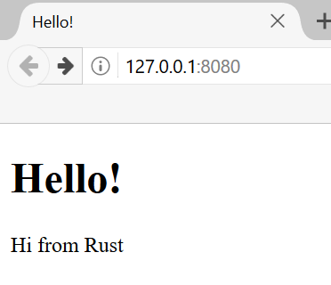

پروژهٔ نهایی: ساخت وبسروری چندریسمانی
راه درازی پیمودهایم و اکنون به پایان کتاب رسیدهایم. در این فصل یک پروژهٔ دیگر را با هم میسازیم تا برخی مفاهیم فصلهای پایانی را نشان دهیم و شماری از درسهای پیشین را نیز مرور کنیم.
برای پروژهٔ نهایی، وبسروری میسازیم که «Hello!» را نمایش میدهد و در مرورگر مانند شکل ۲۱-۱ دیده میشود.
برنامهٔ ما برای ساخت وبسرور چنین است:
- کمی دربارهٔ TCP و HTTP یاد بگیریم.
- روی یک socket به اتصالهای TCP گوش دهیم.
- چند نوع درخواست HTTP را تجزیه کنیم.
- پاسخ HTTP درستی بسازیم.
- توان عملیاتی سرور را با یک thread pool افزایش دهیم.

شکل ۲۱-۱: پروژهٔ مشترک نهایی ما
پیش از شروع باید به دو نکته اشاره کنیم. نخست، روشی که به کار میبریم بهترین راه ساخت وبسرور با Rust نیست. اعضای جامعه چندین crate آمادهٔ محیط عملیاتی در crates.io منتشر کردهاند که پیادهسازی وبسرور و thread pool آنها کاملتر از چیزی است که ما خواهیم ساخت. بااینحال، هدف این فصل یادگیری است، نه انتخاب آسانترین مسیر. چون Rust یک زبان برنامهنویسی سیستمهاست، میتوانیم سطح انتزاع موردنظرمان را انتخاب کنیم و به سطحی پایینتر از آنچه در زبانهای دیگر ممکن یا عملی است برویم.
دوم، اینجا از async و await استفاده نمیکنیم. ساختن یک thread pool بهتنهایی چالش کافی دارد و نمیخواهیم ساخت runtime ناهمگام را هم به آن اضافه کنیم. البته اشاره خواهیم کرد که async و await چگونه میتوانند برای برخی از همین مسئلهها به کار روند. در نهایت، همانطور که در فصل ۱۷ دیدیم، بسیاری از runtimeهای ناهمگام برای مدیریت کار خود از thread pool استفاده میکنند.
بنابراین سرور سادهٔ HTTP و thread pool را دستی مینویسیم تا ایدهها و روشهای عمومی پشت crateهایی را بیاموزید که شاید در آینده به کار ببرید.